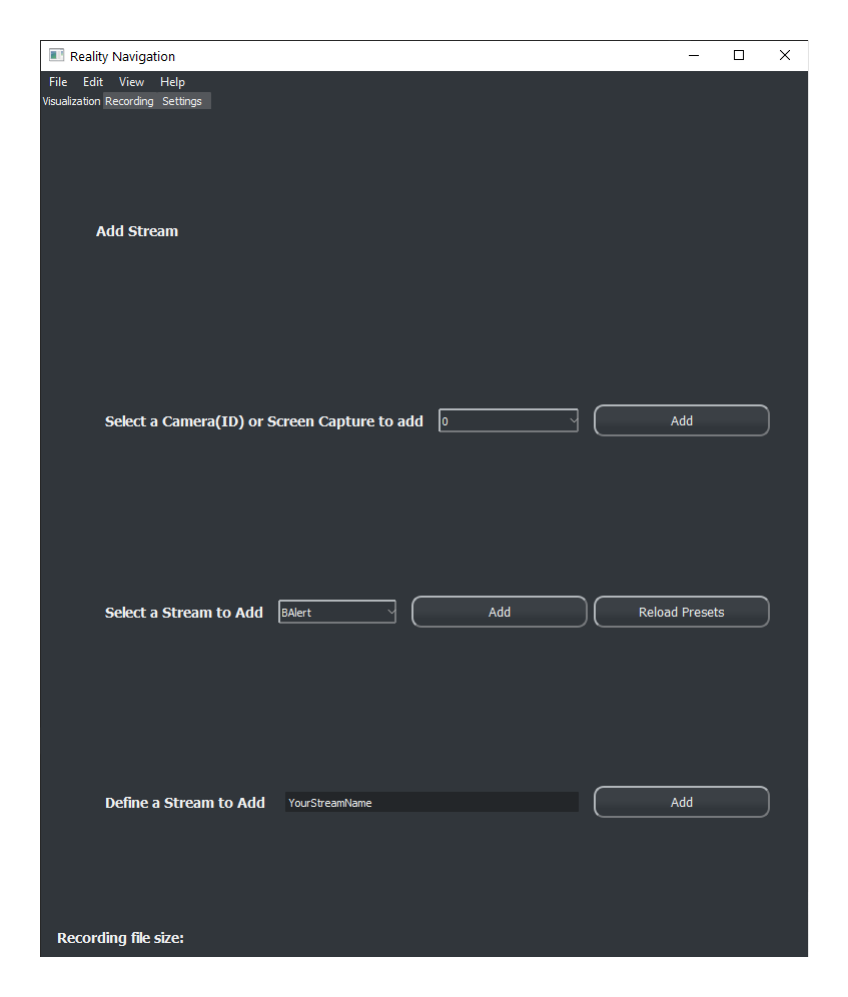
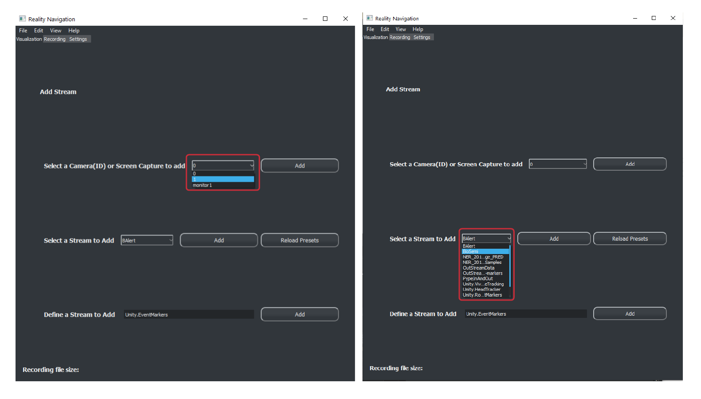

Welcome to RenaLabApp’s documentation!¶
About RenaLabApp¶
RenaLabApp (Rena stands for reality navigation, our vision for this app is to help user navigate all sorts of real-time data in the real world) is a Python-based App for visualizing, synchronizing, recording, and processing (i.e., make prediction) data streams, camera, and screen capture in real-time.
RenaLabApp Users may easily integrate RenaLabApp into their data pipeline if they are already using Lab Streaming Layer (LSL) or ZMQ to stream their data.
Download¶
On launching, the landing page of the RenaLabApp is:
{kind=link}
, where you can add webcam, screen capture, and LSL data stream:
{kind=link}
Below is an example of RNApp monitoring eye tracking, head movement, and event marker for an experiment.
You can start testing your build with a dummy stream. Run this command from the repo’s root to start an dummy stream:
python exmaples/LSLExampleOutlet.py
Copy the stream name (yours might be different) paste it in ‘Define a Stream to Add’ in RNApp.

Then you should see the visualization of this dummy stream, which is sampled at 100Hz, with random numbers:
This covers the basic interaction of visualizing data streams and add camera captures. Read on to learn how to record synchronized data streams, adding your own devices, and other information.
- Cross platform support
The App supports Windows 10, MacOS, and most Linux distros (tested on Ubuntu 20.04 and Fedora 33). You will need to install the headless version of cv2 if you encountered xcb platform plugin not found problem, install with:
pip install opencv-python-headless